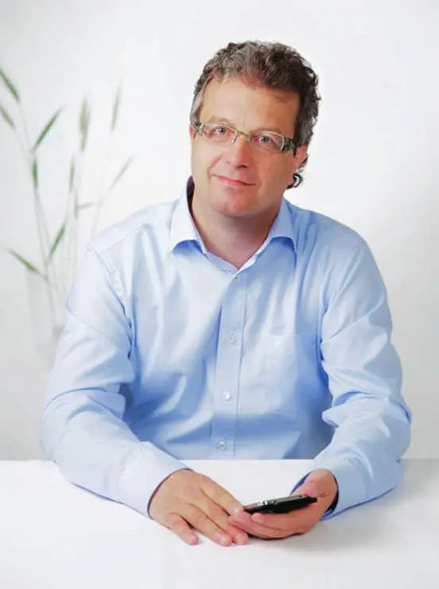
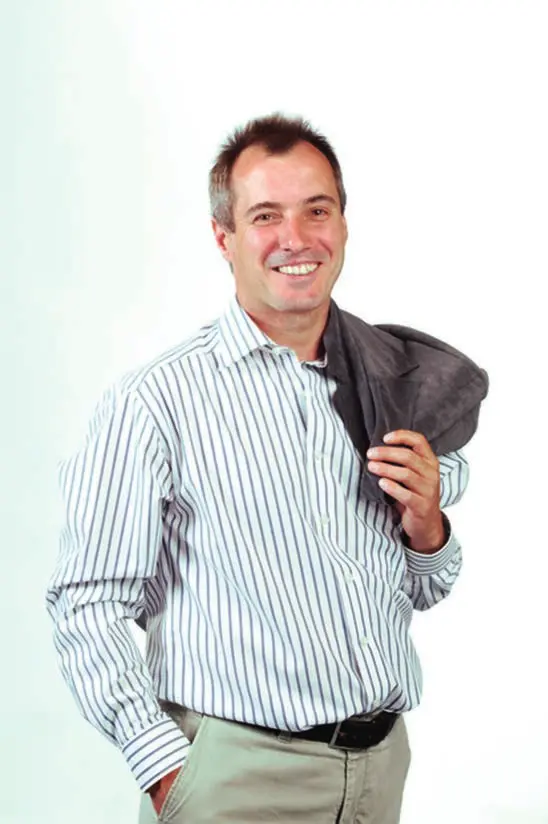
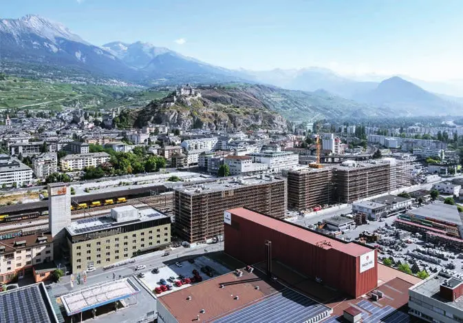
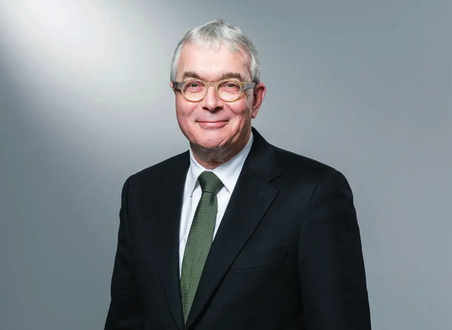
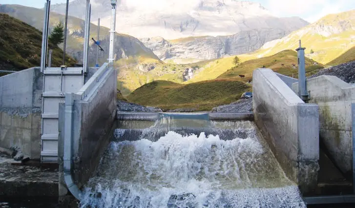
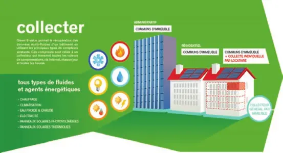
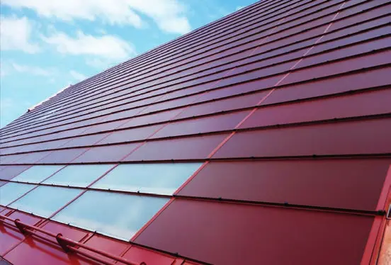
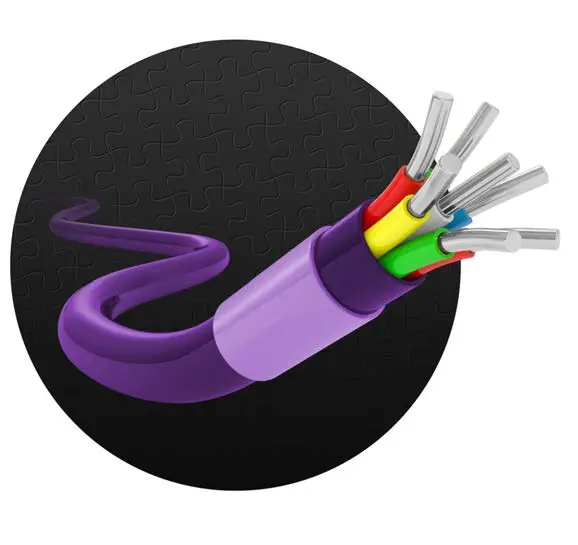
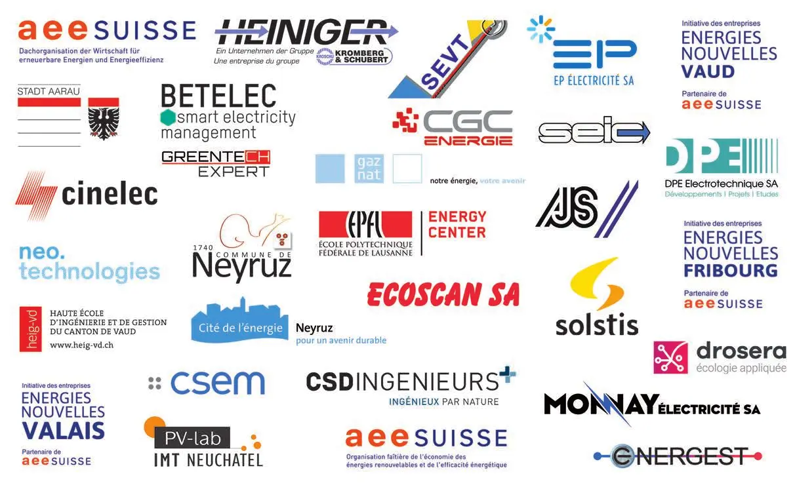
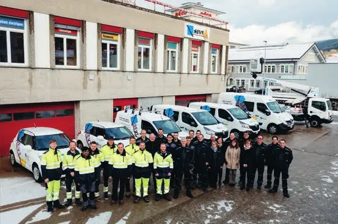

Énergie · 2018 · Suisse romande, Valais, Argovie, Bâle
Swiss Knowhow – AEE Suisse : industrie électrique et énergie 2018
Numéro de novembre 2018 réalisé avec l’AEE Suisse, faîtière de l’économie des énergies renouvelables et de l’efficacité énergétique. Il réunit une vingtaine d’entretiens avec des responsables associatifs, des élus, des chefs de services cantonaux de l’énergie et des chercheurs (EPFL, CSEM, HES) sur la mise en œuvre de la Stratégie énergétique 2050. Des portraits d’entreprises électriques, de bureaux d’ingénieurs, de spécialistes du solaire, du gaz et de l’environnement complètent l’ensemble.
Sommaire · 36 articles
 Interview
InterviewAEE SUISSE: «Mit der Wasserkraft haben wir für die Energiewende einen fliegenden Start»
Interview mit Gianni Operto, Präsident AEE SUISSE
 Interview
InterviewAEE Suisse romande
Interview de Monsieur Andréas von Kaenel, Directeur AEE Suisse romande
 Interview
Interview«Man kann den Bären nicht waschen, ohne das Fell nass zu machen.»
Interview mit Ständerat Dr. Beat Vonlanthen

InterviewVille de Vevey
Interview de Monsieur Jérôme Christen
 Interview
InterviewFavoriser la production d’énergie renouvelable
Interview de Konrad Rieder, Directeur des Affaires régulatoires des SIG

InterviewEnergies Nouvelles Valais
Interview de Monsieur Francis Rossier, président Energies Nouvelles Valais

Énergies nouvelles Vaud
Interview de Monsieur Michel Herzen, Président des énergies nouvelles de Vaud
 Interview
InterviewCanton de Vaud
Interview de Monsieur Laurent Balsiger, Directeur de l’énergie du Canton de Vaud
Énergies nouvelles Vaud
Interview de Monsieur Patrick Chiché, vice-président d’Energies Nouvelles Vaud
Du laboratoire jusqu’à l’industrie
Interview de Monsieur Christophe Ballif, Prof. EPFL, directeur du PV-Lab et du PV-center au CSEM
Centre de l’énergie CEN – Catalyser et fédérer
Interview de Monsieur François Vuille, Directeur du Centre de l’énergie (CEN) de l’EPFL

InterviewHaute Ecole d’Ingénierie du Valais – Investir pour doper la recherche
Interview de Monsieur Gaëtan Chérix, directeur de la Haute Ecole d’Ingénierie du Valais

Pôle Energies HEIG-VD – Objectif : fédérer les recherches à l’interne
Interview de Monsieur Massimiliano Capezzali, Professeur à la Haute Ecole d’Ingénierie
Canton du Valais
Interview de Monsieur Joël Fournier, Chef du service de l’énergie et des forces hydrauliques du Valais
 Interview
InterviewÉnergies nouvelles Fribourg
Interview de Monsieur Laurent Caillère, président d’Energies Nouvelles Fribourg
Canton de Fribourg
Interview de Monsieur Serge Boschung, chef du Service de l’énergie Fribourg
Kanton Wallis
Interview mit Roberto Schmidt, Staatsrat, Chef des Departements für Finanzen und Energie
 Interview
InterviewStadt Aarau: «Die Energiestadt Aarau bekennt sich zu den Zielen der 2000-Watt-Gesellschaft»
Interview mit Dr. Hanspeter Hilfiker, Stadtpräsident

InterviewKanton Basel-Stadt
Interview mit Regierungsrat Christoph Brutschin, Vorsteher Departement für Wirtschaft, Soziales und Umwelt
PublireportageNeyruz pour un avenir durable
Interview de Martial Wicht, Syndic de Neyruz
 Publireportage
PublireportageAJS Ingénieurs civils SA – Des experts de l’analyse au service de grands ouvrages
Publireportage
 Publireportage
PublireportageBETELEC – Smart electricity management
Intelligentes Elektrizitätsmanagement (français et allemand)
 Publireportage
PublireportageCinelec SA
Contrôle indépendant des installations électriques
 Publireportage
PublireportageDrosera Ecologie Appliquée SA – Des compétences reconnues depuis plus de 25 ans
Publireportage
 Interview
InterviewCSD Ingénieurs SA – Un planificateur général doublé d’un spécialiste exigeant
Interview de M. Jean-Pascal Gendre, CEO

PublireportageDPE Electrotechnique SA – De l’étude à la réalisation
Publireportage
 Interview
InterviewECOSCAN, études en environnement – Un spécialiste polyvalent
Interview de Jérôme Duval, sous-directeur
PublireportageGroupe E – Une offre multi-fluides et des prestations de qualité
Publireportage
 Publireportage
PublireportageENERGEST – Gestion technique et énergétique du bâtiment : le cerveau des bâtiments
Publireportage
 Publireportage
PublireportageMonnay Electricité SA – Un prestataire polyvalent pour entreprises et particuliers
Publireportage
EP Electricité SA – La qualité prime
Publireportage
Gaznat SA
Entretien avec M. René Bautz, directeur général

Publireportageneo technologies SA – Des solutions « Smart » clé en main pour répondre à l’évolution du marché de l’énergie
Schlüsselfertige „smarte“ Lösungen (français et allemand)
PublireportageSociété Electrique du Val-de-Travers – SEVT : un service de proximité et de qualité
Publireportage

PublireportageSolstis – Votre projet solaire « clé en main »
Publireportage

InterviewHeiniger Câbles SA – Qualité qui connecte
Entretien avec François Wüthrich, Directeur (français et allemand)
Entreprises de ce numéro · 37
AEE SUISSE – Dachorganisation der Wirtschaft für erneuerbare Energien und Energieeffizienz
Association faîtière des énergies renouvelables et de l’efficacité énergétique
AEE Suisse romande
Association – énergies renouvelables et efficacité énergétique
AJS Ingénieurs civils SA
Bureau d’ingénieurs civils
Betelec SA
Ingénierie électrique et optimisation énergétique
Centre de l’énergie (CEN) de l’EPFL
Coordination de la recherche en énergie

CGC Energie
Cinelec SA
Contrôle des installations électriques
Commune de Neyruz
Commune
CSD Ingénieurs SA (CSD Holding AG)
Conseil en ingénierie et environnement
Direction de l’énergie – Canton de Vaud
Administration cantonale – énergie
DPE Electrotechnique SA
Bureau d’ingénieurs en électricité
Drosera Ecologie Appliquée SA
Bureau d’études en environnement et paysage
Ecoscan SA
Bureau d’études en environnement
ENERGEST
Gestion technique et énergétique du bâtiment
Energies Nouvelles Fribourg
Association de professionnels – énergies renouvelables
Energies Nouvelles Valais
Association d’entrepreneurs – énergies renouvelables
Energies Nouvelles Vaud
Association d’entrepreneurs – énergies renouvelables
EP Electricité SA
Installations électriques, télématique et automation
EPFL – Laboratoire de photovoltaïque et couches minces électroniques (PV-Lab)
Recherche en photovoltaïque
Gaznat SA
Approvisionnement et transport de gaz naturel
Groupe E
Entreprise générale de l’énergie
Heiniger Câbles SA (Heiniger Kabel AG)
Câbles électriques, réseaux et confection de câbles
HES-SO Valais-Wallis – Haute Ecole d’Ingénierie (HEI)
Haute école d’ingénierie
Kanton Basel-Stadt – Departement für Wirtschaft, Soziales und Umwelt
Administration cantonale – économie, social et environnement
Kanton Wallis – Departement für Finanzen und Energie
Administration cantonale – finances et énergie
Monnay Electricité SA
Installations électriques, domotique et photovoltaïque
neo technologies SA
Conseil et solutions de smart metering
Neyergie SA
Société communale d’énergie renouvelable
Pôle Energies HEIG-VD
Coordination de la recherche en énergie
SEIC
Distribution d’énergie et de signaux numériques
Service de l’énergie – Canton de Fribourg
Administration cantonale – énergie
Service de l’énergie et des forces hydrauliques – Canton du Valais
Administration cantonale – énergie
SIG – Services Industriels de Genève
Entreprise d’approvisionnement énergétique

Société Electrique du Val-de-Travers (SEVT)
Électricité : distribution, production, installations et commerce
Solstis
Installations solaires photovoltaïques
Stadt Aarau
Commune
Ville de Vevey
Commune
Aucun résultat.